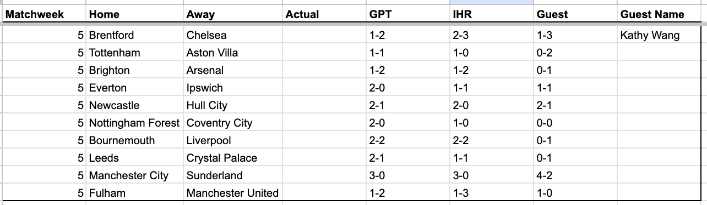

TJH is going to remember this week’s battering all too well. I came out on top with 7 points to GPT’s 6 and TJH’s 5.
This upcoming week I’m going against Kathy Wang (KW). KW may dedicate most of her attention sports-wise towards tennis and hockey, but it's hard to bet against her across-the-board ball knowledge when she is messaging to discuss Cavan Sullivan unprompted. KW’s story proves that trading is as much nature as it is nurture and there is real concern if she gets Mr. Wang and the other San Diego superforecasters into the mix.
This weekend I have a doubleheader against KW in both EPL football predictions as well as an NFL fantasy football matchup. I find myself in the situation of rooting for a Villa win over Spurs, a Leeds win over Palace, and a high-scoring run-heavy-but-not-Josh-Allen Bills offense against a passing-heavy-but-not-to-ARSB Lions offense. It’s like watching City vs. United and rooting for Semenyo and Ndiaye and Bruno Fernandes but not Haaland nor Cunha.

KW gets some credit for the most out of consensus picks of all the guests thus far.
The consensus picks are Chelsea over Brentford, Arsenal over Brighton, Newcastle over Hull, Mancity over Sunderland.
IHR and GPT agree on Forest over Coventry and a Bournemouth/Liverpool draw.
IHR and KW agree on Everton/Ipswich draw.
There is no consensus on Tottenham vs. Aston Villa nor Leeds vs. Crystal Palace.